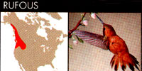
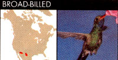
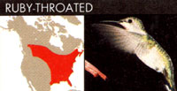
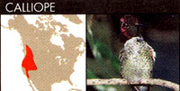
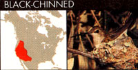
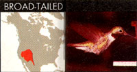
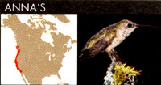
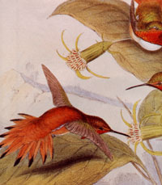
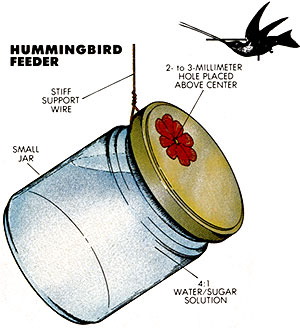

Lots of good things come in small packages.
Back in the days when I could get away with such things, I spent a summer thumbing my way across the country, stopping and camping wherever the mood (or exhaustion) struck. My meanderings eventually led me onto the hiking trails transversing Kentucky's magnificent Daniel Boone National Forest.
I had just settled back against a tree, munching the last of the blackberries I'd picked that morning and basking in the hot July sun, when a dark blur accompanied by an odd, soft whrrrrrr sound flashed a few feet in front of my face and stopped abruptly just to my left. I froze in midbite. Out of the corner of my eye, just barely within the farthest stretch of my peripheral vision, I could see a tiny, dusky-green bird, delicate as a whisper, perched on a branch no more than six inches from my ear.
I had never seen a hummingbird at rest before, to say nothing of one that close. Assuming that it was unaware of my presence, I sat motionless, hardly breathing, straining my eye sideways to watch the miniature creature as it sat on the twig, its tiny body lightly pumping up and down as though pulsating. Suddenly it was gone; with a whir it flashed to my right, zipped upward a few feet, whizzed down, hovered a moment at a honeysuckle blossom, then buzzed back to my left again, this time alighting on a branch almost directly in front of me, about two feet away. Catching the sun, the tiny body flashed brilliant green and red. The little bird cocked its head and looked me square in the eye, as if to say, "There. Now do you see me?"
A moment later it was off again, darting, whirring, poking its beak into more honeysuckle, then zapping back to the bush to regard me, then to the nectar and back to the bush-over and over for perhaps a full 10 minutes. Finally, just as abruptly as it had come, off it flew, leaving me alone again under a tree in the hot summer sun.
For reasons I can't fully explain, it was a special and enriching experience for me. Out of the blue, a creature of nature had come, fully giving its trust, and had allowed me to share its world. For a twinkling of suspended time, a spark of communication had linked us, and I had almost sensed what it is to be a tiny bird, wild and free.
I've been fascinated with hummers ever since. Few birds are as interesting to study and observe-or as easy to attract. Because they feed mostly on flower nectar and the insects in and around the blossoms, you can draw hummers to your home year after year merely by growing the flowering plants, vines, shrubs and trees they favor. For that matter, just an inexpensive (or homemade) hummingbird feeder filled with sugar water will bring the little dynamos to your yard and help supplement their natural diet. (See the sidebars.)
Given their astonishing metabolism, it's easy to understand why food is such a powerful lure to hummingbirds. Although they're the smallest of birds, their energy output-by weight-is greater than any other warmblooded creature's. To fuel their highrev power plants, hummingbirds eat almost continuously. A single hummer consumes more than half its weight in insect protein and sugar, and up to eight times its weight in liquid, every day. One researcher calculated that if a 170-pound man burned energy at the same rate that a hummingbird does, he would expend about 155,000 calories a day, meaning he'd need to eat something like 285 pounds of hamburger daily to sustain himself!
And then, of course, there's the little bird's obvious aerial agility. Hummers are among the fastest of all small birds (average speed is 30 mph, with top speeds reaching 50 mph). They can hover, fly backward or vertically or upside down, and can almost instantaneously change speed from zero to full-out (or any speed in between). The wings of all other birds bend at three joints-the equivalents of our shoulder, elbow and wrist. But the hummingbird's wings move more like an insect's; they bend only at the juncture with the body, but in almost any direction, giving it tremendous power and dexterity. The hummer is the only bird that propels itself with as much force on the upstroke of its wings as on the downstroke. Nearly a third of the bird's total weight is breast muscle.
Also proportionately huge is the hummingbird's brain: more than 4% of its body weight. If our 170-pound man could make the same claim, his brain would weigh almost twice that of an average human's.
All of this in a creature that is markedly diminutive. A ruby-throated hummingbird measures only three and a quarter inches long, beak and tail included, and weighs just three grams-only a tad more than nothing at all. Its eggs are the size and shape of navy beans. Its nest is something out of a fairy tale: a tiny one- to two-inch-diameter pixie cup made of mosses and lichens and plant down bound together with spiders' silk.
But small as it is, this miniature, feathered fireball is anything but timid. Hummingbirds are among the boldest of birds; curious to a fault and fiercely defensive of their feeding or nesting territories. They carry on terrific aerial battles over contested ground, the competitors skyrocketing on a collision course one moment, screeching to a hover the next, chittering and chattering at one another like angry chipmunks. I've seen hummingbirds battle with bumblebees over access to nectar-bearing flowers, and with sparrows, wrens and robins for no apparent reason at all other than, perhaps, the fun of it. One spring day I watched incredulously as a tiny hummer dive-bombed a large crow that had come too close to her nest.
Of the 341 species of hummingbirds in the world, just 21 are known to make their homes in the U.S. Here in Virginia and elsewhere east of the Great Plains, only the feisty ruby-throated hummingbird nests and breeds. But westward, 14 additional species live, with another half-dozen kinds nesting in limited numbers in the deep Southwest, scarcely north of the Mexican border.
The smallest bird in the U.S., a resident of the West's high-mountain coniferous forests, is the calliope hummingbird-less than three inches long! The black-chinned hummingbird is the ruby-throat's western counterpart and is nearly as widespread. In the Rockies, the broad-tailed makes its presence known by the distinctive shrill, cricketlike warbling sound its wings make. Anna's hummingbird is familiar to West Coast residents, and the rufous-unique for its rusty orange plumage-is well known in the Northwest and north into Canada. The broad-billed is a desert species that flashes a brilliant metallic blue throat in the sun.
In other words, regardless of where you live in North America, you can attract hummingbirds to your yard. Our place is abuzz with ruby-throats from early spring through the golden days of midautumn.
I may as well confess: All these years that I've been telling the story of my encounter with the hummingbird in Kentucky, and expressing my admiration for these unique creatures, I've secretly harbored the impossible notion that maybe the little bird I met also recounted the experience to its cronies, perhaps passing the word that not all humans are to be feared after all. Sometimes I actually imagine that's why we get so many hummers here. Sometimes, in fact, I even go so far as to think maybe that same hummingbird is among those that whiz and whir and chatter at our flowers and feeders every summer.
It's a rather silly thought, I know, but I like to think it just the same.
Feeding Hummingbirds
Commercial hummingbird feeders range from inexpensive plastic models to more costly handmade stoneware feeders. Or you can make your own from a small, clean glass or plastic container with a tight lid; a baby food jar or plastic pill bottle works nicely.
Make a very small hole-no more than two or three millimeters-in the lid, slightly offset from the center. (If the lid is plastic, burn the hole in with heated wire; if it's metal, use a nail, then file any rough edges smooth.) Paint a small red flower-or just a dab of red-around the hole. Then wrap a length of soft wire around the neck of the container, leaving about four to six inches of wire free. Form a small hook at the end of the wire, then fill the container, put the lid on, and suspend the feeder from a nail or eye screw, bending the wire as necessary to make the container hang at an angle just slightly upward of horizontal.
Although you can buy syrup for your feeders, it's easy to make your own. Hummingbirds get the most energy from a solution of four parts water to one part sugar; stronger concentrations of sugar are not recommended. (Don't use honey, either; the sweetener can foster a fungous growth on the birds' beaks.) Boil the water first, then stir in the sugar, and let the solution cool before pouring it into the feeder. There's no need to add red coloring to the solution, as long as some part of the feeder itself is red, to draw the birds' attention.
It's best to hang feeders in a partially shaded spot, near natural food sources (such as any of the plants listed here). Be sure to wash the feeders in very hot water, refilling them with fresh syrup, every three or four days, to prevent potentially harmful molds from developing.
Gardening for Hummingbirds'
The sugar water in hummingbird feeders can serve as an important dietary supplement-particularly during periods of drought, and to the early spring and other times when natural nectar sources aren't abundant. A better way to draw hummingbirds to your yard and provide food for them, however, is to establish a landscape of flowering trees, vines, shrubs and other plants from which the birds can sip nectar and pluck proteinrich insects
Here are some recommended "hummingbird garden" varieties. It's best to plant native species when possible.
|
 |
 |
 |
|
 |
 |
 |
|
 |
 |
 |